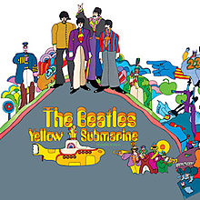

Newest Articles
 |
PBS Broadcast Premiere Of Ron Howard's Acclaimed THE BEATLES' EIGHT DAYS A WEEK: THE TOURING YEARS. It is based on the first part of The Beatles' career (1962-1966) — the period in which they toured and captured the world's acclaim. The film explores how John Lennon, Paul McCartney, George Harrison and Ringo Starr came together to become this extraordinary phenomenon, "The Beatles." |
|  | YELLOW SUBMARINE returns to cinemas across the UK, Ireland and the U.S. this summer. Picturehouse Entertainment are thrilled to announce the blues-banishing news that The Beatles' legendary animated hit film YELLOW SUBMARINE is returning to cinemas across the UK and Ireland on 8 July 2018. |
Sgt Pepper's Lonely Hearts Club Band Anniversary Editions. It was 50 years ago when The Beatles' John Lennon, Paul McCartney, George Harrison, and Ringo Starr astonished and delighted the world, ushering in the Summer of Love with Sgt. Pepper's Lonely Hearts Club Band, a groundbreaking masterwork that became popular music's most universally acclaimed album. To celebrate, we released a set of Anniversary Edition collections with new mixes in stereo and 5.1 surround audio; expanded with previously unreleased session recordings, video features & special packaging. |